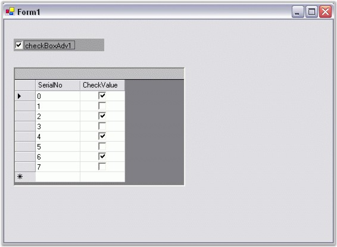

This section will help you become more familiar in using the CheckBoxAdv control.
The CheckBoxAdv's IntValue property can be used to databind bit values as illustrated below.
|
[C#]
private void Form1_Load(object sender, System.EventArgs e) { // Using CheckBoxAdv's IntValue property for Databinding. this.oleDbDataAdapter1.Fill(this.dataSet11.Table1); }
this.checkBoxAdv1.DataBindings.Add("IntValue", this.dataSet11.Table1, "BitField"); |
|
[VB.NET]
Private Sub Form1_Load(ByVal sender As Object, ByVal e As System.EventArgs) ' Using CheckBoxAdv's IntValue property for Databinding. Me.oleDbDataAdapter1.Fill(Me.dataSet11.Table1) End Sub
Me.checkBoxAdv1.DataBindings.Add("IntValue", Me.dataSet11.Table1, "BitField") |
A sample which demonstrates how bit values are used to set the state of the CheckBoxAdv is available in the below sample installation path.
..My Documents\Syncfusion\EssentialStudio\Version Number\Windows\Tools.Windows\Samples\2.0\Editors Package\OptionControls
The CheckBoxAdv's BoolValue property can be used to databind bool values as illustrated below.
|
[C#]
private void Form1_Load(object sender, System.EventArgs e) { this.oleDbDataAdapter1.Fill(this.dataSet11.Table1); }
// Using CheckBoxAdv's BoolValue property for Databinding. this.checkBoxAdv1.DataBindings.Add("BoolValue", this.dataSet11.Table1, "CheckValue"); |
|
[VB.NET]
Private Sub Form1_Load(ByVal sender As Object, ByVal e As System.EventArgs) Me.oleDbDataAdapter1.Fill(Me.dataSet11.Table1) End Sub
' Using CheckBoxAdv's BoolValue property for Databinding. Me.checkBoxAdv1.DataBindings.Add("BoolValue", Me.dataSet11.Table1, "CheckValue") |

Figure 626: Databinding a CheckBoxAdv to an SQL Database if the corresponding Datatable Field is Boolean